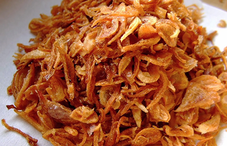

Onion Value Addition

Dried Onion
- Onion varieties with pungent flavor are most appreciated, both colored and white onions may be used.
- After removing the tops, roots and outer skin, onions are washed carefully then cut at a right angle to the core of the onions.
- Blanching is not practiced, as the onion loses its flavor.
- The use of preservatives is not necessary: after cutting, the slices are spread evenly on the trays of a dryer.
- The onions are dried when the ratio of prepared raw material to drier product is about 9:1 (moisture content 5%).
- he dried product may be ground to a powder, which tends to make clumps. The dryer used for onions must be reserved especially for onions.